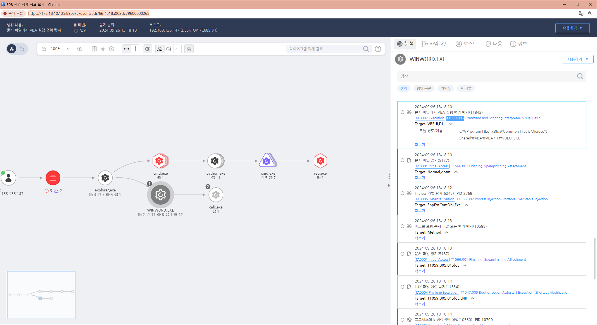

T1059.005.01 Command and Scripting Interpreter - Visual Basic
D3FEND
MITRE ATT&CK 액션을 기준으로 대응 방안을 작성
Detection
(Current Process Name = "winword.exe" OR "excel.exe" OR "powerpnt.exe") AND
(Action = DLL-Load) AND (DLL Name = "vbeui.dll")
Detection(EDR)

Response
악성 문서 파일을 삭제합니다.
해당 행위를 수행한 프로세스를 종료합니다.
공격자에 의해 PC가 제어되었을 가능성이 있으므로 호스트 네트워크를 격리합니다.
공격자 C&C 서버로 추정되는 주소를 차단합니다.
Mitigations
스크립트 실행 제한
- VBScript나 VBA가 실행되지 않도록 제한하거나, 필요하지 않은 경우 아예 비활성화합니다. 예를 들어, VBScript 실행을 Windows에서 비활성화하거나 Microsoft Office 애플리케이션에서 매크로 실행을 제한하는 설정을 할 수 있습니다.
- Office 문서에서의 매크로 실행을 차단하여 악성 매크로를 통한 공격을 방지합니다. 특히 외부에서 받은 문서에 대해 매크로가 실행되지 않도록 보안 설정을 강화합니다.
애플리케이션 제어 (Application Control)
- 신뢰할 수 없는 VBScript나 VBA가 실행되지 않도록 애플리케이션 제어 솔루션을 도입합니다. 예를 들어, 특정 애플리케이션에서만 스크립트가 실행될 수 있도록 허용 리스트(Whitelist)를 적용합니다.
- Microsoft의 AppLocker나 Windows Defender Application Control(WDAC)과 같은 도구를 사용하여 악성 스크립트 실행을 차단할 수 있습니다.
매크로 설정 관리
- Office 문서에서 매크로 보안 설정을 강화하여, 서명되지 않은 매크로나 인터넷에서 다운로드된 문서에서 매크로가 실행되지 않도록 설정합니다.
- 조직 내부의 신뢰할 수 있는 매크로만 실행되도록 정책을 구성합니다.
- 그룹 정책을 통해 Microsoft Office에서 VBA 매크로 실행을 완전히 차단할 수도 있습니다.
최소 권한 원칙 적용 (Least Privilege)
- 스크립트가 실행될 수 있는 사용자 계정에 대해 최소 권한 원칙을 적용하여, 악성 스크립트가 실행되더라도 시스템 전체에 영향을 미치지 않도록 제한합니다.
- 관리자 권한이 불필요한 사용자 계정에서는 절대로 스크립트를 실행하지 못하도록 권한을 제한합니다.
소프트웨어 패치 및 업데이트
- Microsoft Office, Windows 스크립트 엔진 및 기타 관련 소프트웨어에 대해 정기적으로 보안 패치를 적용하여, Visual Basic 관련 취약점을 이용한 공격을 예방합니다.
안티멀웨어 솔루션 사용
- 신뢰할 수 있는 안티멀웨어 및 보안 솔루션을 사용하여 Visual Basic 스크립트를 통한 악성 활동을 탐지하고 차단합니다.
- 악성 코드가 포함된 스크립트나 매크로를 탐지하는 기능이 있는 보안 소프트웨어를 사용하여 시스템을 보호합니다.
사용자 교육
- 사용자가 의심스러운 이메일 첨부파일이나 매크로가 포함된 문서를 열지 않도록 교육합니다.
- 특히 신뢰할 수 없는 출처의 문서에서 매크로가 활성화되지 않도록 경고합니다.
Affected Techniques
Action 실행시 함께 영향을 받는 다른 Techniqes
| D3FEND |
| D3-SCA System Call Analysis |
| D3-IS Isolation |
| D3-PA Process Analysis |